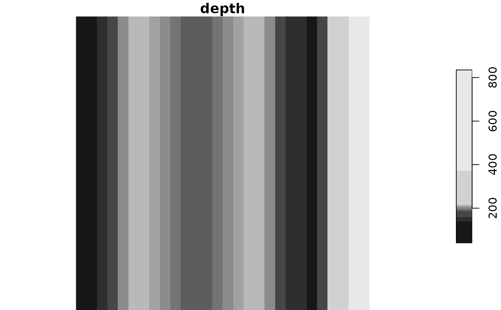
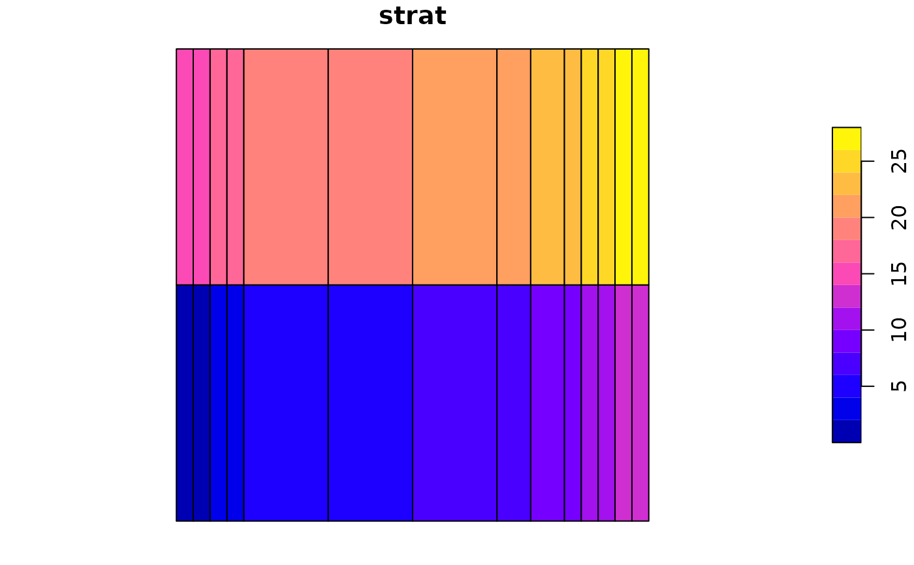

This function sets up a depth stratified survey grid. A simple gradient in depth
is simulated using spline with a shallow portion, shelf and
deep portion. Adding covariance to the depth simulation is an option.
Range (min x, max x) in x dimension in km
Range (min y, max y) in y dimension in km
Resolution, in km, of the grid cells
Approximate depth of the shelf in m
Approximate width of the shelf in km
Range (min depth, max depth) in depth in m
Number of divisions to include
Define strata given these depth breaks
Number of times to horizontally split strat (i.e. easy way to increase the number of strata)
Use a "spline", "loess" or "bezier" to generate a smooth gradient or simply use "linear" interpolation?
Returns RasterBrick of the same structure as survey_grid
r <- make_grid(res = c(10, 10))
raster::plot(r)

p <- raster::rasterToPolygons(r$strat, dissolve = TRUE)
#> Loading required namespace: rgeos
sp::plot(p)
